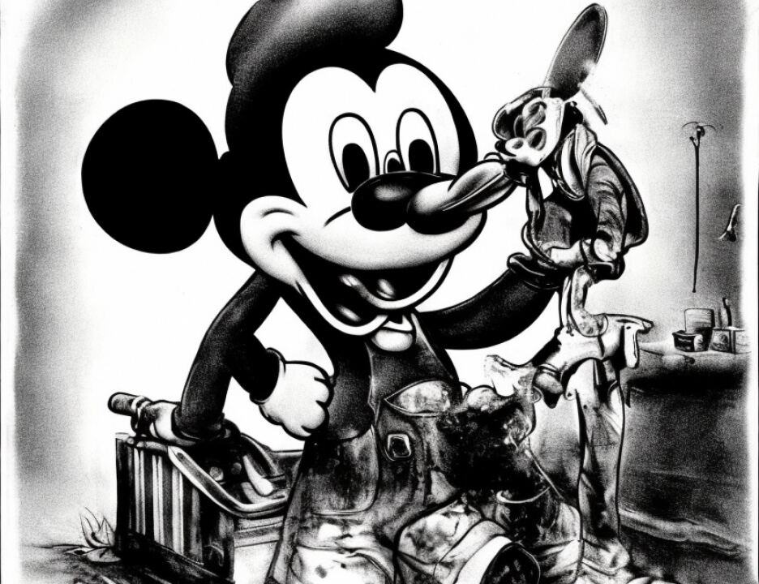

9 the preceding paragraph, and the government and the defense
10 reserve the right to object to the admissibility of any
11 particular item or the translation of same as each is offered.
12 It is the purpose of this stipulation to avoid the necessity
13 of calling and recalling multiple authentication witnesses at
14 trial during the government and defense cases regarding the
15 translations. The parties stipulate that if called as a
16 witness, a person fluent in Arabic and English would testify
17 that the translations listed above are fair and accurate
18 translations.
19 4. It is further stipulated and agreed that this
20 stipulation may be received in evidence as a defense exhibit
21 at trial.
22 Your Honor, I would move the underlying documents
23 listed in the stipulation in evidence.
24 THE COURT: Received.
25 MR. DRATEL: Thank you, your Honor. The stipulation
5136
1 is WEHXS11.
2 THE COURT: Received.
3 (Defense Exhibits WEHXS11 and exhibits described
4 therein received in evidence)
5 MR. SCHMIDT: Your Honor, other than what we briefly
6 mentioned, defendant rests.
7 THE COURT: Defendant El Hage rests?
8 MR. SCHMIDT: That is correct.
9 THE COURT: That is with the exception of a
10 stipulation, Mr. Schmidt, which is in the process.
11 MR. FITZGERALD: That was actually executed, Judge.
12 MR. SCHMIDT: Yes.
13 THE COURT: I think it was just executed and read.
14 MR. DRATEL: Yes, we just did that one. Mr. Schmidt
15 was unaware.
16 MR. SCHMIDT: Your Honor, I think there is one
17 possible outstanding one.
18 THE COURT: A stipulation which has already been
19 discussed with the government?
20 MR. SCHMIDT: It has been discussed but not
21 concluded.
22 THE COURT: But no live testimony?
23 MR. SCHMIDT: No additional live witnesses, that is
24 correct.
25 THE COURT: Very well. Mr. Cohn.
5137
1 MR. COHN: Thank you, your Honor. Your Honor, I have
2 one, just one stipulation. It is hereby stipulated and agreed
3 by and between defendant Al-'Owhali, by and with the consent
4 of his attorney and the United States of America by Mary Jo
5 White, United States Attorney for the Southern District of New
6 York, Patrick Fitzgerald, Kenneth M. Karas, Paul W. Butler and
7 Michael J. Garcia, of counsel, that:
8 1. Government's Exhibit 562 -- may we have that,
9 flip the switch for us, please? Thank you -- that
10 Government's Exhibit 562 is the newspaper photograph which the
11 witness Charles Mwaka Mula stated in August 1998 that he
12 recognized as depicting the person that he saw emerge from the
13 passenger side of the truck and begin throwing items the day
14 of the embassy bombings.
15 Further, it is stipulated that Government's Exhibit
16 563 is the composite sketch prepared by an FBI agent based on
17 the description provided by the witness Charles Mwaka Mula on
18 August 11, 1998, of the individual he observed exiting the
19 truck and throwing items on the day of the bombing.
20 It is further stipulated and agreed that Government's
21 Exhibits 562 and 560 may be received in evidence at trial --
22 and, your Honor, I believe they already are in evidence.
23 It is further stipulated and agreed that this
24 stipulation may be received as evidence at trial, and this
25 stipulation is marked Al-'Owhali L.
5138
1 THE COURT: Received.
2 (Defense Exhibit Al-'Owhali L received in evidence)
1